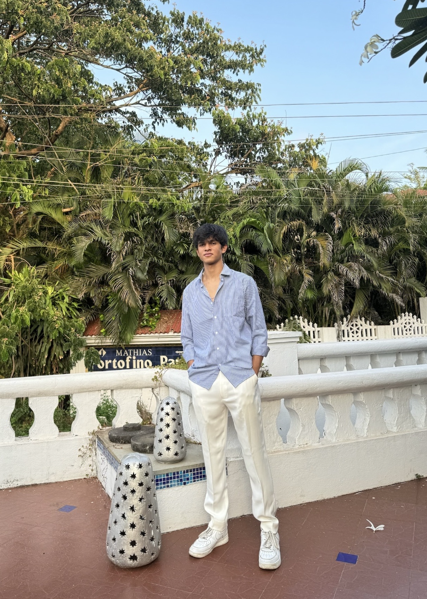

Welcome to My Website

About Me
Hi, I'm Ishaan Kankariya, an undergraduate at Northeastern University studying Data Science and Finance through Khoury College. I'm based in Boston and expect to graduate in May 2028. I enjoy working where numbers meet real decisions, whether that means building a valuation model, cleaning a messy dataset, or turning results into a chart people can actually understand.
I have spent time in several finance roles: a wealth management internship at Turtle Trail Wealth in Pune, an investment accounting co-op at Penn Mutual, valuation and advisory work at V. A. Dudhedia & Co, and market research and sales at Kotak Mahindra Bank. Each role taught me something different about how data shapes financial decisions.
On campus, I am a Senior Consultant with the Northeastern Consulting Group, a Financial Analyst at NU Disrupt, a Market Research Analyst with the Emerging Markets Club, a Resident Assistant, and a member of Delta Sigma Pi. These roles have helped me practice teamwork, client communication, and leading projects from start to finish.
I built this website for DS4200 using HTML, CSS, and D3.js. Outside of school and work, my favorite thing to do is play and watch soccer, so the second page of this site is all about the sport, including a D3 chart built from real data. Thanks for stopping by!
Contact
Email: kankariya.i@northeastern.edu
LinkedIn: linkedin.com/in/ishaankankariya
GitHub: github.com/Ishaan-Kankariya